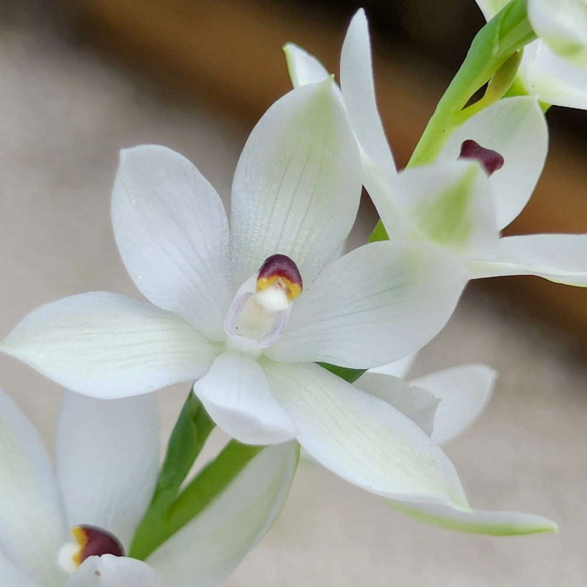

The Developmental Morphology of New Zealand Native Orchids
by John Rugis
Contents
species:
Thelymitra logifolia
prev
next

T. logifolia
flower. Cultivated, ex Muriwai.
Some descriptive text goes here.
(c)2022 J.Rugis
jrugis@gmail.com